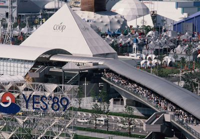
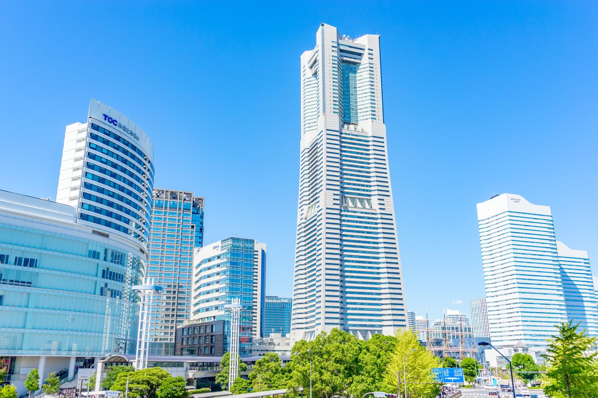
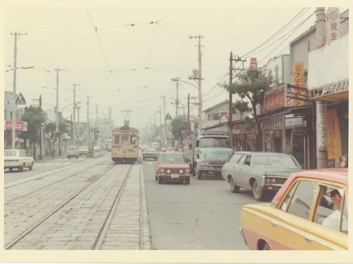

インタビュー
質問内容
1.バブル崩壊後の横浜の情勢や状況について
2.横浜博覧会が開催されて変わったことや感じたことはあるか
3.八景島シーパラダイスやランドマークタワーが出来るニュースや情報を知った時の心情
4.みなとみらい開発が始まり埋め立てや開発がすすめられたがどのような気持ちだったか
5.昔から今まである、使い続けている思い入れのある場所があれば教えて下さい
1バブル崩壊

2博覧会

3ランドマークタワーなど

4みなとみらい開発

5思い入れのある場所

インタビュー
質問内容